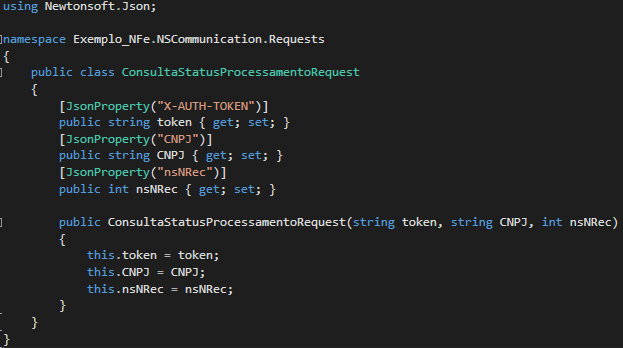
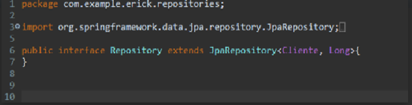

A serialização resume-se em salvar, gravar, capturar o estado de um objeto. Ou seja, tenho um objeto de uma classe e quero salvar seu estado. Usar serialização permite que você crie o objeto ou uma variável de instância de uma classe e grave em um arquivo para, futuramente, utilizar esse objeto/variável com seu estado que foi gravado. Serialização é a técnica que permite transformar o estado de um objeto em uma sequência bytes. Depois que um objeto for serializado ele pode ser gravado (ou persistido) em um arquivo de dados e recuperado do arquivo e desserializado para recriar o objeto na memória.
processo de serialização de objetos com o propósito de persisti-los em arquivos de dados passa por três etapas:
a) Estruturar as informações do objeto em uma classe que implementa a interface “Serializable:” classe “Pessoa” na Listagem 1;
b) Persistir os objetos serializados em um arquivo binário: método “gravarArquivoBinario()” da classe Empacotamento na Listagem 2;
c) Recuperar os objetos serializados do arquivo binário: método “lerArquivoBinario()” da classe Empacotamento na Listagem 2
Uma interface em Java nada mais é que uma classe abstrata composta somente por métodos abstratos. E como tal, obviamente não pode ser instanciada. Ou seja, ela só contém as declarações dos métodos e constantes sem nenhuma implementação. Ela serve para que outras classes, baseadas nessa interface, implementem esses métodos para fins específicos. Ela é uma espécie de comunicação entre meios.
